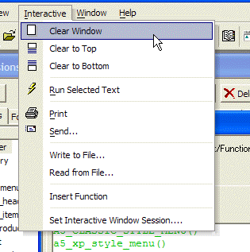
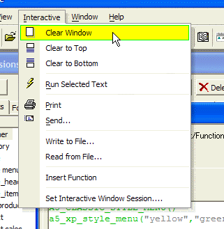

A5_XP_STYLE_MENU()
Syntax
A5_XP_STYLE_MENU( [ Fill_Color as C [, Box_Color as C ]] )
Argument | Description |
Fill_Color | Optional. Default = System defined. The fill color of the selection box. |
Box_Color | Optional. Default = System defined. The border color of the selection box. |
Description
The A5_XP_STYLE_MENU() function causes Alpha Anywhere to display menus in the style of Windows XP.

Limitations
Desktop applications only.
Example
a5_xp_style_menu("yellow","green") |

See Also
Menus, A5_CLASSIC_STYLE_MENU()